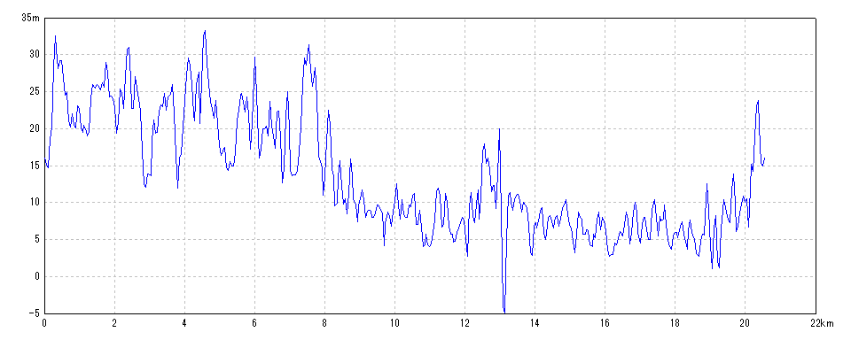
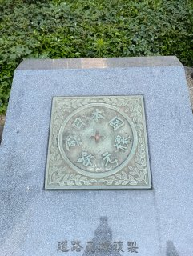
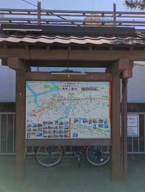
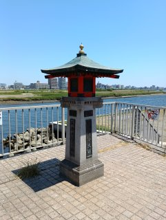
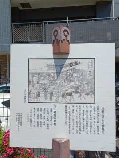
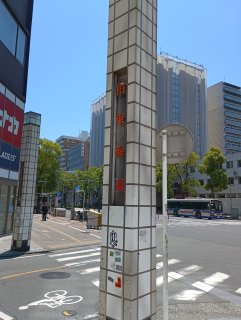

| 開始日時 | 2026/05/17 07:32:37 | 終了日時 | 2026/05/17 11:11:29 |
| 水平距離 | 20.56km | 沿面距離 | 20.66km |
| 経過時間 | 3時間38分52秒 | 移動時間 | 3時間17分15秒 |
| 全体平均速度 | 5.66km/h | 移動平均速度 | 6.25km/h |
| 最高速度 | 15.00km/h | 昇降量合計 | 628m |
| 総上昇量 | 314m | 総下降量 | 314m |
| 最高高度 | 34m | 最低高度 | -7m |

2026/05/17 07:25:56
2026/05/17 07:39:32

2026/05/17 08:51:47
2026/05/17 10:49:42

2026/05/17 10:49:49

2026/05/17 10:52:24

2026/05/17 11:12:17